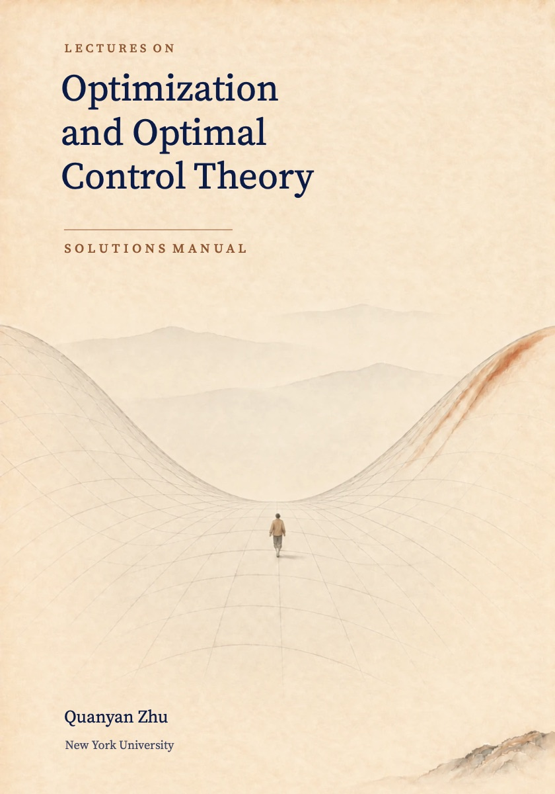

One subject, usually taught as two
Optimization and optimal control are ordinarily split between two courses and two literatures. A student learns Lagrange multipliers and the KKT conditions in one term and the minimum principle in another, and the fact that the second is the first, carried to a space of functions, arrives as a surprise rather than as the point.
These lectures keep the thread visible. The same question is asked throughout — what must hold at an optimum, and how can it be computed — first for a point in a finite-dimensional space, then for a point in a normed space, then for a trajectory, and finally for a policy under uncertainty. The notation carries over from chapter to chapter, so the costate of the minimum principle is recognizably the multiplier of Chapter 3, and the Riccati equation of the linear-quadratic regulator is recognizably the one that reappears in the Kalman filter.
Finite- and infinite-dimensional together
Vector spaces, norms, and Gâteaux and Fréchet differentials are introduced early, so that the step from minimizing a function to minimizing a functional costs no new machinery. Classical optimality conditions, convexity, and duality are all stated in a form that survives that step.
Theory with the algorithms attached
Two chapters are given to algorithms — descent methods, Newton and quasi-Newton, conjugate gradient, penalty and barrier methods, projections and interior-point ideas — so that the optimality conditions come with the means to act on them, and their convergence is analyzed rather than asserted.
Control as optimization over time
Deterministic optimal control is developed from the calculus of variations through the discrete- and continuous-time minimum principles and dynamic programming; the stochastic part then adds estimation, filtering, and control under incomplete information, closing the loop between what a system knows and what it should do.
Fifteen chapters in five parts
An introductory chapter sets up the problem classes and the historical thread. Five parts follow, each self-contained enough to be taught on its own once Parts I and II are in hand, and two appendices review linear system theory and probability. Every chapter ends with further reading and exercises.
1Introduction
- 1Introduction — problem classes, worked examples, and a historical timeline
IFoundations and Optimization Theory
- 2Mathematical Foundations of Optimization Theory
- 3Classical Optimality Conditions
IIConvex Optimization
- 4Basic Convex Optimization
- 5Generalized Convex Optimization
- 6Vector Space Convex Optimization
IIIAlgorithms
- 7Algorithms for Unconstrained Problems
- 8Algorithms for Constrained Problems
IVDeterministic Optimal Control
- 9Calculus of Variations
- 10Discrete-Time Optimal Control
- 11Continuous-Time Optimal Control
- 12Optimal Control under Incomplete Information
VStochastic Optimal Control
- 13Estimation Theory
- 14Kalman Filtering
- 15Stochastic Control
A·BAppendices
- ALinear System Theory
- BProbability Theory
Manual, slides, code, and corrections
This is the book's companion website, for material that does not fit between the covers. Items are posted here as they become ready, and further supplementary material will be added over time.
The complete book
All fifteen chapters, both appendices, and the full index, 777 pages. Download the PDF (6.6 MB).
Lecture slides
Slides for each lecture of ECE-GY 6233, following the book chapter by chapter, for students and for instructors teaching from it.
Code for the figures
The scripts behind the book's plots and numerical examples, so that readers can reproduce them and vary the parameters.
Corrections
A list of corrections to the book, updated as errors are found. None are posted yet. Please send any error you find to qz494@nyu.edu.

Solutions manual
Worked solutions to the exercises of all fifteen chapters and both appendices, 315 pages. Each problem is restated above its solution, so the manual reads on its own; where an exercise asks for a number or a plot, the solution gives the quantity in closed form and states the values a correct implementation should reproduce. Instructors teaching from the book can request a copy from qz494@nyu.edu.
Where this material is taught
Instructors who use the book in a course are welcome to write to me.
NYU Tandon · ECE-GY 6233 System Optimization Methods
The graduate course these lectures were written for, taken by students in electrical and computer engineering, mechanical and civil engineering, computer science, and finance.
A one-term path
Chapters 1 to 8 make a term on optimization: foundations, optimality conditions, convexity and duality, and algorithms. Chapters 9 to 15 make a term on optimal control, resting on the first.
Prerequisites
Multivariable calculus and linear algebra. The appendices supply the linear system theory and the probability used in Parts IV and V, so neither is assumed in advance.